AI (Object Detection with Xilinx DPU IP)
1. AI (Object Detection with Xilinx DPU IP)
The details in this chapter are implemented in the following environment:
Hardware: Vivado 2020.1 on Windows OS
Software: Petalinux 2019.2 on Ubuntu 18.04 (VMware 17.5.2)
Application: Object detection with YOLO on Pynq-Z2 board
https://xilinx.github.io/Vitis-AI/3.0/html/docs/reference/release_documentation.html
1.1. Xilinx DPU (Hardware)
1.1.1. Obtaining Xilinx DPU IP
The latest version of DPU IP no longer supports Zynq-7000, but it is supported up to version 3.3. This time, we will use version 3.0 to implement it on the Zynq-7000. DPU IP that supports Zynq-7000 is not widely released to the public, but it is available in the zcu102-dpu-trd-2019-1-190809.zip file.
After extracting the zcu102-dpu-trd-2019-1-190809.zip file, there will be a folder named dpu_ip inside zcu102-dpu-trd-2019-1-timer\pl\srcs. Copy the entire dpu_ip folder to your desired location. In this tutorial, it will be placed at D:\xilinx\pynq_z2\AI\DPU\ip_repo
(The Vivado project is D:\xilinx\pynq_z2\AI\DPU\Pynq-Z2_2020_1\pynqz2_dpu.xpr)

1.1.2. Adding DPU IP to IP Catalog
In the IP Catalog, click Add Repository and add dpu_ip
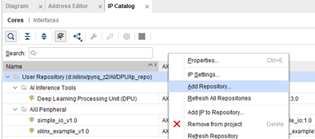
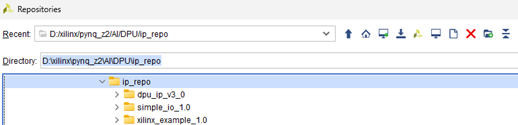
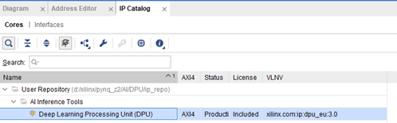
1.1.3. Installing DPU IP
‐ Open Block design and insert DPU IP, then connect it to Zynq as shown in the image below
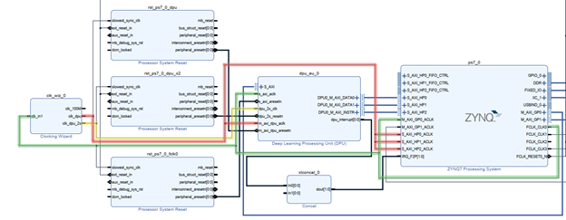
The DPU interface has several ports:
1. S_AXI, s_axi_aclk
Used for configuring the DPU operations and others. It connects to the AXI Master (M_AXI_GP) of the Zynq.
2. M_AXI_DATA0, M_AXI_DATA1, M_AXI_INSTR, m_axi_dpu_aclk
Used for outputting the DPU calculation results. It connects to the AXI Slave (S_AXI_HP0~2) of the Zynq.
3. dpu_2x_clk
Receives a clock signal with twice the frequency of m_axi_dpu_aclk.
4. dup_interrupt
The interrupt signal of the DPU.
* There are 3 clock signals fed into the DPU IP:
s_axi_aclk: Zynq -> DPU, set to 100MHz
m_axi_dpu_aclk: DPU -> Zynq, set to 150MHz
dpu_2x_clk: DPU, set to 300MHz
The 150MHz and 300MHz signals are generated by a PLL and fed into m_axi_dpu_aclk and dpu_2x_clk.
‐ The pynq-z2 board has limited FPGA logic resources. To reduce the logic usage of the DPU, change the "Arch of DPU" to B1152.
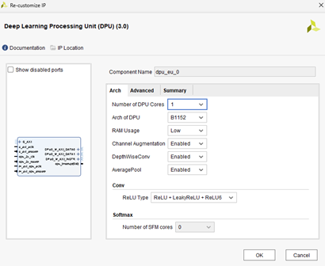
1.1.4. Generating Hardware Information (.XSA)
After compiling the project in Vivado, export the hardware information (.xsa) by going to File -> Export -> Export Hardware
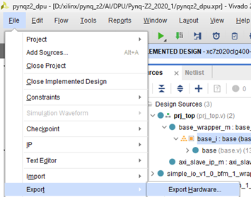
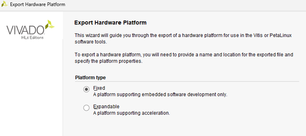
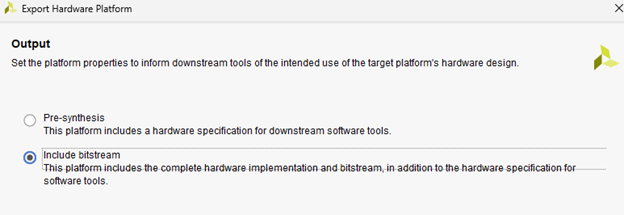
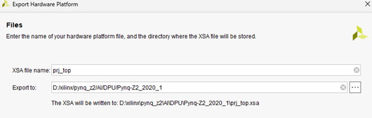
1.2. Xilinx DPU (Software)
1.2.1. Setting Up the Environment
‐ Install Petalinux 2019.2 on a Linux machine (Ubuntu). This time we will use Ubuntu 18.04.
$ sudo apt update
$ sudo apt upgrade
$ sudo apt install htop vim openssh-server iproute2 gcc g++ net-tools libncurses5-dev zlib1g:i386 libssl-dev flex bison libselinux1 xterm autoconf libtool texinfo zlib1g-dev gcc-multilib build-essential screen pax gawk python3 python3-pexpect python3-pip python3-git python3-jinja2 xz-utils debianutils iputils-ping libegl1-mesa libsdl1.2-dev pylint3 cpio chrpath socat python
$ pip3 install --upgrade pip
$ sudo apt-get install tftp
$ sudo apt-get install tftpd-hpa
$ sudo apt-get install gparted
‐ Install necessary packages.
# petalinux install
$ mkdir ~/petalinux_2019
$ mv ~/Downloads/petalinux-v2019.2-final-installer.run ~/petalinux_2019/.
$ cd ~/petalinux_2019
$ chmod +x petalinux-v2019.2-final-installer.run
$ ./petalinux-v2019.2-final-installer.run
([q] to close message)
‐ In Ubuntu, change the default system shell to run scripts from dash to bash.
$ chsh -s /bin/bash
then reboot
$ sudo dpkg-reconfigure dash
-> select no
1.2.2. Building Linux
‐ Prepare Petalinux
$ source ~/petalinux_2019/settings.sh
‐ Create a Petalinux project and import the hardware information.
$ cd ~/
$ petalinux-create --type project --template zynq --name pynqz2_dpu
$ cd pynqz2_dpu/
$ petalinux-config --get-hw-description=~/Desktop/Pynq-Z2_2020_1
Then, make the following settings:
1.
DTG Settings->Kernel Bootargs->disable generate boot args automatically
On "user set kernel bootargs", paste the following:
console=ttyPS0,115200 root=/dev/mmcblk0p2 rw earlyprintk quiet rootfstype=ext4 rootwait cma=256M
2.
Image Packaging Configuration --> Root filesystem type (SD card) --> EXT4 (SD/eMMC/SATA/USB) -> enable
‐ Add necessary settings for the DPU.
$ cp -rp ~/Downloads/zcu102-dpu-trd-2019-1-190809/zcu102-dpu-trd-2019-1-timer/apu/dpu_petalinux_bsp/xilinx-dpu-trd-zcu102-v2019.1/zcu102-dpu-trd-2019-1/project-spec/meta-user/recipes-modules project-spec/meta-user
$ gedit project-spec/meta-user/conf/user-rootfsconfig
CONFIG_dpu
$ gedit project-spec/meta-user/conf/petalinuxbsp.conf
IMAGE_INSTALL_append
= "dpu"
$ gedit project-spec/meta-user/recipes-bsp/device-tree/files/system-user.dtsi
/include/ "system-conf.dtsi"
&amba {
xlnk {
compatible = "xlnx,xlnk-1.0";
};
};
&amba{
dpu{
#address-cells = <1>;
#size-cells = <1>;
compatible = "xilinx,dpu";
base-addr = <0x4f000000>; //CHANGE THIS ACCORDING TO YOUR DESIGN
dpucore {
compatible = "xilinx,dpucore";
interrupt-parent = <&intc>;
interrupts = <0 29 4>; //CHANGE THIS ACCORDING TO YOUR DESIGN
core-num = <0x1>; //CHANGE THIS ACCORDING TO YOUR DESIGN
};
};
};
//usb device tree
/{
usb_phy0: usb_phy@0 {
compatible = "ulpi-phy";
#phy-cells = <0>;
reg = <0xe0002000 0x1000>;
view-port = <0x0170>;
drv-vbus;
};
};
&usb0 {
dr_mode = "host";
usb-phy = <&usb_phy0>;
};
* interrupts = <0 29 4>; is IRQ F2P number 61 (61-32 = 29). It must be set to match the IRQ channel used during DPU hardware design.
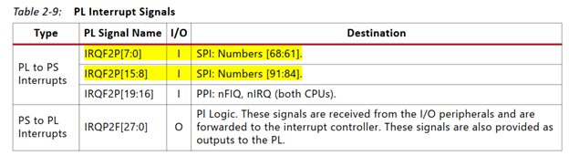
$ petalinux-config -c rootfs
modules -> dpu
Filesystem Packages -> admin -> sudo, sudo-dev
Filesystem Packages -> misc -> packagegroup-petalinux-self-hosted
Petalinux Package Groups → packagegroup-petalinux-python-modules, -dev
Petalinux Package Groups → packagegroup-petalinux-x11, -dev
Filesystem Packages -> console -> utils -> pkgconfig -> pkgconfig, pkgconfig dev
Filesystem Packages -> libs -> gtk+3 -> gtk+3, gtk+3-demo, gtk+3-dev, gtk+3-dbg
Petalinux Package Groups -> petalinuxgroup-petalinux-opencv -> opencv, opencv-dev
$ petalinux-config -c kernel
Device Drivers -> USB support -> [*]USB announce new devices
$ petalinux-build -c kernel -x finish
(To finish kernel configuration)
$ gedit project-spec/meta-user/recipes-kernel/linux/linux-xlnx/devtool-fragment.cfg
* Delete the old text and paste this:
CONFIG_USB_OTG=y
# CONFIG_USB_OTG_FSM is not set
# CONFIG_USB_ZERO_HNPTEST is not set
CONFIG_MEDIA_USB_SUPPORT=y
CONFIG_USB_VIDEO_CLASS=y
CONFIG_USB_VIDEO_CLASS_INPUT_EVDEV=y
CONFIG_USB_GSPCA=m
CONFIG_V4L_PLATFORM_DRIVERS=y
CONFIG_VIDEO_ADV7604=y
CONFIG_USB_HID=y
CONFIG_USB_OHCI_LITTLE_ENDIAN=y
CONFIG_USB_SUPPORT=y
CONFIG_USB_COMMON=y
CONFIG_USB_ARCH_HAS_HCD=y
CONFIG_USB=y
CONFIG_USB_ANNOUNCE_NEW_DEVICES=y
CONFIG_USB_DEFAULT_PERSIST=y
CONFIG_USB_EHCI_HCD=y
CONFIG_USB_EHCI_ROOT_HUB_TT=y
CONFIG_USB_EHCI_PCI=y
CONFIG_USB_EHCI_HCD_PLATFORM=y
CONFIG_USB_ACM=m
CONFIG_USB_PRINTER=m
CONFIG_USB_WDM=m
CONFIG_USB_TMC=m
CONFIG_USB_STORAGE=y
CONFIG_USB_CHIPIDEA=y
CONFIG_USB_CHIPIDEA_OF=y
CONFIG_USB_CHIPIDEA_PCI=y
CONFIG_USB_CHIPIDEA_HOST=y
CONFIG_USB_PHY=y
CONFIG_NOP_USB_XCEIV=y
CONFIG_AM335X_CONTROL_USB=y
CONFIG_AM335X_PHY_USB=y
CONFIG_USB_GPIO_VBUS=y
CONFIG_USB_GPIO_VBUS=y
CONFIG_USB_ULPI=y
CONFIG_USB_ULPI_VIEWPORT=y
‐ Build Petalinux
$ petalinux-build
$ petalinux-package --boot --force --fsbl images/linux/zynq_fsbl.elf --fpga images/linux/*.bit --u-boot
$ petalinux-package --bsp -p ./ -o pynq-z2-dpu.bsp
The files generated from building are located at:
./images/linux/BOOT.BIN
./images/linux/image.ub
./images/linux/rootfs.tar.gz
* If BOOT.BIN does not include the bitstream, regenerate BOOT.BIN using the following method:
Run petalinux-config and go to FPGA Manager -> FPGA Manager, set it to Disable. Then build Petalinux again, and run: petalinux-package --boot --force --fsbl images/linux/zynq_fsbl.elf --fpga images/linux/*.bit --u-boot (Errors might occur during build, but they can be ignored.)
State when BOOT.BIN has not included the bitstream:

State when BOOT.BIN has included the bitstream (the size will be roughly system.bit + u-boot.bin):

1.2.3. Building YOLO to run on Xilinx DPU
‐ Prepare the environment
Install Anaconda
$ cd ~/
$ wget https://repo.anaconda.com/archive/Anaconda3-2020.02-Linux-x86_64.sh
$ bash Anaconda3-2020.02-Linux-x86_64.sh
Then, restart PC
$ conda create -n decent pip python=3.6
$ source activate decent
$ cd ~/Downloads/xilinx_dnndk_v3.1/host_x86/decent-tf/ubuntu18.04/
$ pip install ./tensorflow-1.12.0-cp36-cp36m-linux_x86_64.whl
$ pip install numpy opencv-python==4.6.0.66 scikit-learn==0.24.2 scipy progressbar2 keras==2.2.4
$ pip install pillow
$ pip install 'h5py==2.10.0' --force-reinstall
$ sudo apt install libgoogle-glog-dev
$ sudo apt-get install graphviz
‐ Install DNNDK
$ cd Downloads/xilinx_dnndk_v3.1/host_x86
$ gedit install.sh
Add PynqZ2
support_board=(ZCU102 ZCU104 ZedBoard Ultra96 PynqZ2)
$ chmod +x install.sh
$ sudo ./install.sh PynqZ2
‐ Convert the YOLO execution file into a format that the Xilinx FPGA can run
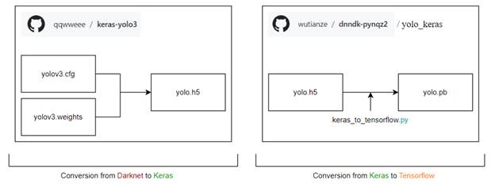
‐ Convert from Darknet to Keras
Go to the website https://pjreddie.com/darknet/yolo/ and download yolov3.weights
copy to ~/Desktop/YOLO-on-PYNQ-Z2/DNNDK/model_conversion
$ cd ~/Desktop/YOLO-on-PYNQ-Z2/DNNDK/model_conversion
$ python convert.py yolov3.cfg yolov3.weights ~/Desktop/YOLO-on-PYNQ-Z2/DNNDK/model_conversion/model_data/yolo.h5
‐ Convert from Keras to Tensorflow
$ python keras_to_tensorflow.py --input_model=/home/hong/Desktop/YOLO-on-PYNQ-Z2/DNNDK/model_conversion/model_data/yolo.h5 --output_model=/home/hong/Desktop/YOLO-on-PYNQ-Z2/DNNDK/model_conversion/model_data/yolo.pb
‐ Perform Quantization
$ cp ./model_data/yolo.pb /home/hong/Desktop/YOLO-on-PYNQ-Z2/DNNDK/quantization
# check the input and output names on this network
$ cd /home/hong/Desktop/YOLO-on-PYNQ-Z2/DNNDK/model_conversion
$ decent_q inspect --input_frozen_graph=model_data/yolo.pb
Note the following content (to be used later):
Found 1 possible inputs: (name=input_1, type=float(1), shape=[?,?,?,3])
Found 3 possible outputs: (name=conv2d_59/BiasAdd, op=BiasAdd) (name=conv2d_67/BiasAdd, op=BiasAdd) (name=conv2d_75/BiasAdd, op=BiasAdd)
‐ Prepare COCO dataset
Download the COCO dataset from the following websites:
http://images.cocodataset.org/zips/train2017.zip
http://images.cocodataset.org/annotations/annotations_trainval2017.zip
Create the following directories and extract the downloaded COCO dataset:
$ mkdir /home/hong/Desktop/YOLO-on-PYNQ-Z2/DNNDK/quantization/yolo_dataset
Then, rename the folders as follows:
train2017 -> images
annotations_trainval2017 -> labels
‐ Edit the conversion script
$ gedit /home/hong/Desktop/YOLO-on-PYNQ-Z2/DNNDK/quantization/graph_input_fn.py
Edit path
path = "/home/hong/Desktop/YOLO-on-PYNQ-Z2/DNNDK/quantization/yolo_dataset/images/"
‐ Perform Quantization
$ cd /home/hong/Desktop/YOLO-on-PYNQ-Z2/DNNDK/quantization
$ gedit quant.sh
In the --output_nodes section, specify the content obtained from the "decent_q inspect" check:
echo "#####################################"
echo "QUANTIZE"
echo "#####################################"
decent_q quantize \
--input_frozen_graph ./yolo.pb \
--input_nodes input_1 \
--input_shapes ?,416,416,3 \
--output_nodes "conv2d_59/BiasAdd,conv2d_67/BiasAdd,conv2d_75/BiasAdd" \
--method 1 \
--input_fn graph_input_fn.calib_input \
--gpu 0 \
--calib_iter 100
$ chmod +x quant.sh
$ ./quant.sh
The quantized files will be generated at:
~/Desktop/YOLO-on-PYNQ-Z2/DNNDK/quantization/quantize_results/quantize_eval_model.pb
‐ Compile for DPU
$ cd ~/Desktop/YOLO-on-PYNQ-Z2/DNNDK/quantization
$ cp ./quantize_results/deploy_model.pb /home/hong/Desktop/YOLO-on-PYNQ-Z2/DNNDK/compilation
$ cd /home/hong/Desktop/YOLO-on-PYNQ-Z2/DNNDK/compilation
$ dlet -f ~/Desktop/Pynq-Z2_2020_1/pynqz2_dpu.srcs/sources_1/bd/base/hw_handoff/base.hwh
$ dlet -f ~/Desktop/Pynq-Z2_2020_1/pynqz2_dpu.srcs/sources_1/bd/base/hw_handoff/base.hwh /home/hong/Desktop/YOLO-on-PYNQ-Z2/DNNDK/compilation/pynq-z2.dcf -o
$ mv dpu-12181630-181630-202412181630-1630-30.dcf pynqz2_dpu.dcf
$ chmod 777 ~/Desktop/YOLO-on-PYNQ-Z2/DNNDK/compilation/pynqz2_dpu.dcf
$ sh compile.sh
The compiled files will be generated here (compilation takes a long time; from experiments on a PC Core i5-13500, it takes about 12 hours):
(decent) hong@ubuntu:~/Desktop/YOLO-on-PYNQ-Z2/DNNDK/compilation/compile$ ls
dpu_yolo.elf yolo_kernel_graph.jpg yolo_kernel.info
1.2.4. Testing on the Real Device
Testing on a real device requires creating a program, but this time we will use the program prepared in the reference document.
‐ Creating the SD Card
Create the following partitions using gparted
Partition1：fat32
Partition2：ext4
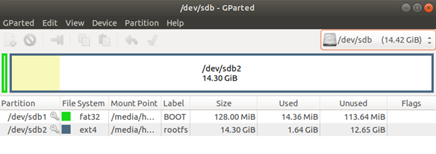
Copy Uboot, Linux, and others to the SD Card
$ sudo mkdir /mnt/sdb1
$ sudo mkdir /mnt/sdb2
$ sudo mount /dev/sdb1 /mnt/sdb1
$ cd ~/pynqz2_dpu/images/linux/
$ sudo cp BOOT.BIN image.ub /mnt/sdb1/.
$ sudo umount /mnt/sdb1
$ sudo mount /dev/sdb2 /mnt/sdb2
$ sudo tar xzf rootfs.tar.gz -C /mnt/sdb2/
$ sync
$ cd ~/Desktop/YOLO-on-PYNQ-Z2/DPU\ implementation/Petalinux/
$ sudo cp -vr ./zynq7020_dnndk_v3.1/* /mnt/sdb2/home/root/
$ sudo cp -vr ./zynq7020_dnndk_v3.1 /mnt/sdb2/home/root/
$ sync
$ sudo umount /mnt/sdb2
‐ The prepared files in the reference document contain .cpp files, makefiles, and others. We will use those files as they are, but replace only the compiled YOLO files.
$ cd ~/Desktop/YOLO-on-PYNQ-Z2/DNNDK/compilation/compile
$ cp dpu_yolo.elf ~/Desktop/YOLO-on-PYNQ-Z2/Deployment/yolo_pynqz2/model/.
$ cp yolo_kernel_graph.jpg ~/Desktop/YOLO-on-PYNQ-Z2/Deployment/yolo_pynqz2/info/.
$ cp yolo_kernel.info ~/Desktop/YOLO-on-PYNQ-Z2/Deployment/yolo_pynqz2/info/.
‐ Insert the SD Card into the Pynq-Z2 and power it on. Wait until Linux finishes booting. Verify that the DPU is integrated correctly by using the devmem command to read some values (run on the Pynq-Z2 board):

‐ Log in with MobaXterm. The user is "root" and the password is "root".
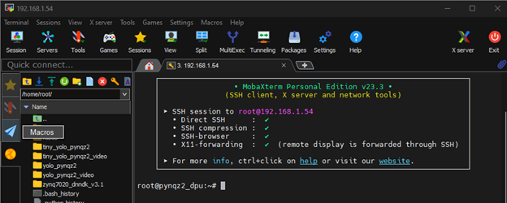
‐ Install DNNDK (run on the Pynq-Z2 board)
root@pynqz2_dpu:~# cd zynq7020_dnndk_v3.1/
root@pynqz2_dpu:~/zynq7020_dnndk_v3.1# sh install.sh
‐ Copy the cpp files, makefile, and others (the entire yolo_pynqz2 folder) to the Pynq-Z2 board (you can drag and drop in MobaXterm).

‐ Build and run the application (run on the Pynq-Z2 board)
root@pynqz2_dpu:~/yolo_pynqz2# make
root@pynqz2_dpu:~/yolo_pynqz2# ./yolo_image dog.jpg
Upon successful execution, the detected objects will be displayed as shown in the image below:
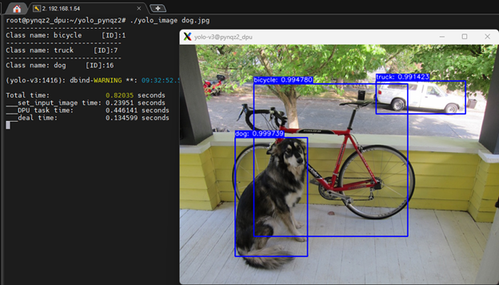
1.3. References
Reference Document:
https://andre-araujo.gitbook.io/yolo-on-pynq-z2/deployment-on-pynq-z2/execute-yolov3
Since the latest version of DPU IP no longer supports Zynq-7000, it cannot be downloaded from Xilinx's website. However, it can be downloaded from the link below:
https://drive.google.com/file/d/1-Ajpk6HIDHIkwDHdUJaB92HN5g_S0Bam/view